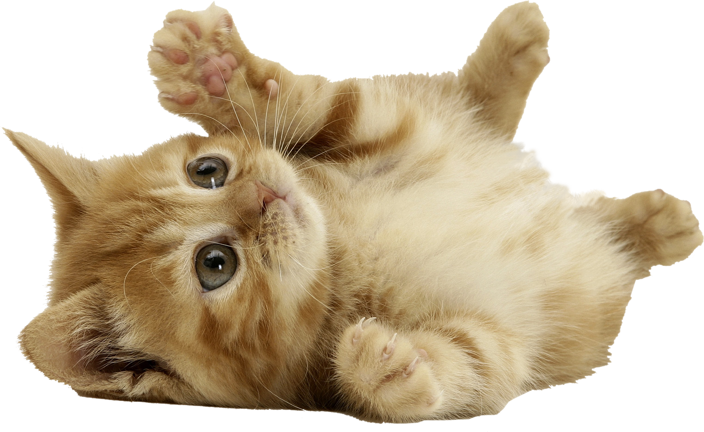
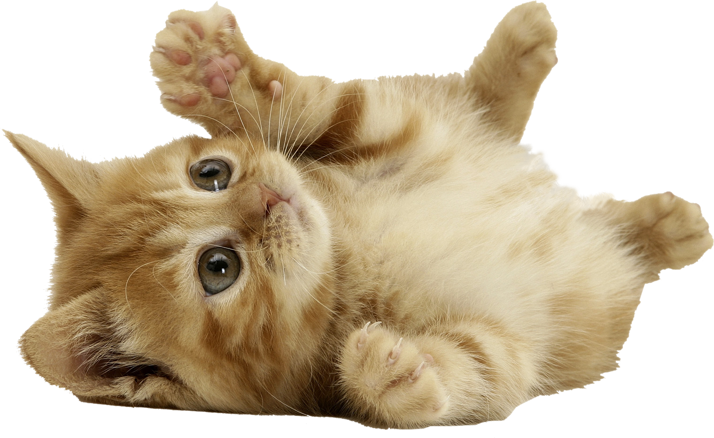

¡Porque cada pata merece atención de primera!
Cuidando de tu mas fiel amigo!
En Clinica Veterinaria, nuestro compromiso es proporcionar la mejor atención y cuidado para tus mascotas. Nuestro equipo de veterinarios altamente calificados y amantes de los animales está dedicado a garantizar la salud y el bienestar de tus compañeros peludos. Desde exámenes de rutina hasta tratamientos especializados, estamos aquí para brindar el más alto nivel de atención médica y cariño a cada uno de nuestros pacientes. En Clinica Veterinaria, no solo cuidamos a los animales, también cuidamos a las familias que los aman. Confía en nosotros para mantener a tus mascotas felices y saludables durante toda su vida.